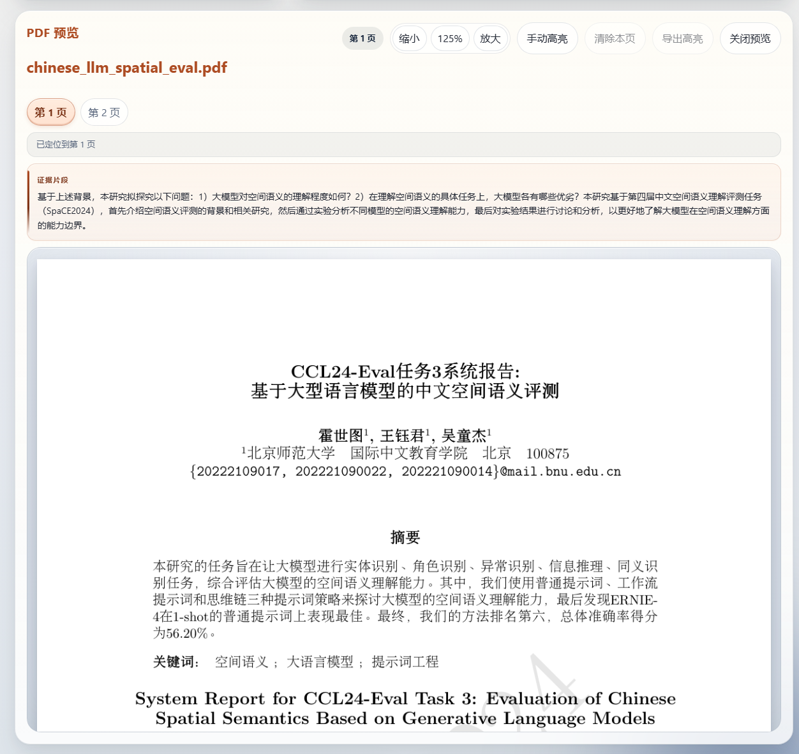
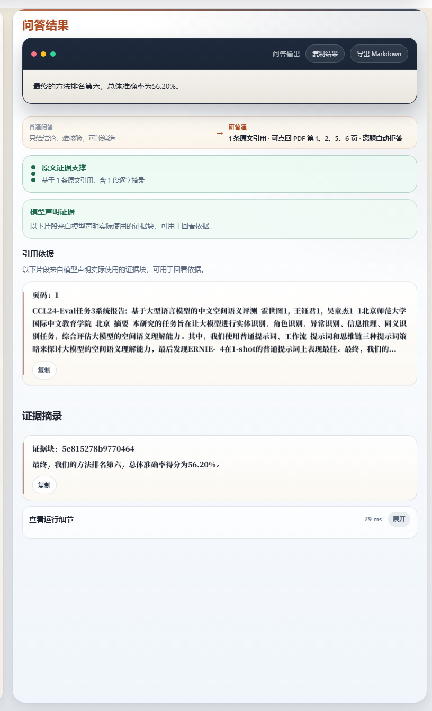
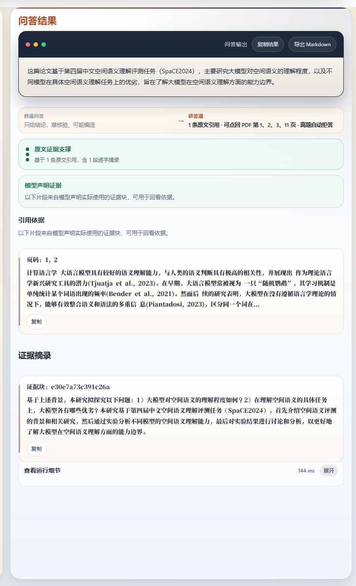
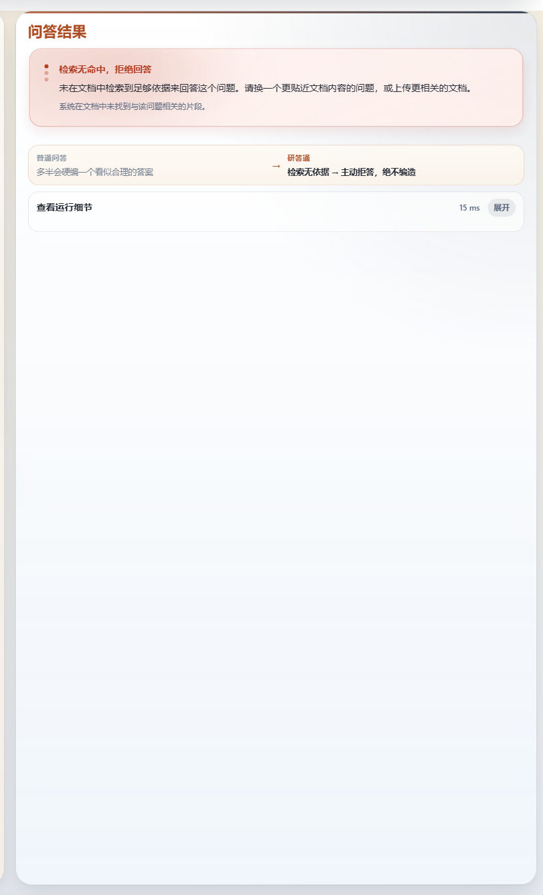

Evidence-Backed Ask
研答通
面向论文阅读、报告复核、答辩准备的文档问答助手。核心不是泛化聊天， 而是让回答、citation 与 PDF 原文证据形成闭环。
锁定样例
中文论文 PDF
主链路
upload → ask → citation → PDF → refusal
默认 QA
deepseek-v4-flash（rollback: qwen3-235b）
验证结果
2 answered + 1 refused
“对论文和报告场景来说，重要的不是答案更像聊天，而是每条回答都说得出依据。”
为什么现有工具还不够
- 长文阅读成本高，关键信息分散。
- 普通聊天工具能回答，但很难证明答案来自原文。
- 答辩和汇报场景里，真正重要的是“说得出依据”。
我们怎么做
- 上传论文或报告，保留页级结构。
- 先检索相关片段，再生成回答。
- 同步返回 citation、页码和证据区。
- 点击 citation 直接回到 PDF 原页。
- 离题问题直接拒答，不编造。
锁定样例验证

citation 不是装饰，而是一个可回跳的 PDF 入口。评审能直接看到原页、证据位置和原文片段。



锁定题组
- 这篇论文主要研究了什么问题？
- 作者最终的方法排名和总体准确率分别是多少？
- 木星有几颗卫星？
当前结论
- 当前默认 QA：deepseek-v4-flash（V6 holdout 71/72）
- rollback：qwen3-235b（51 题集 51/51；历史 fallback qwen3-32b）
- 差异点不是更会聊，而是更能回证据。
锁定样例：chinese_llm_spatial_eval.pdf
核心主线：upload → ask → citation → PDF → refusal
适用场景：论文精读 / 报告复核 / 答辩准备